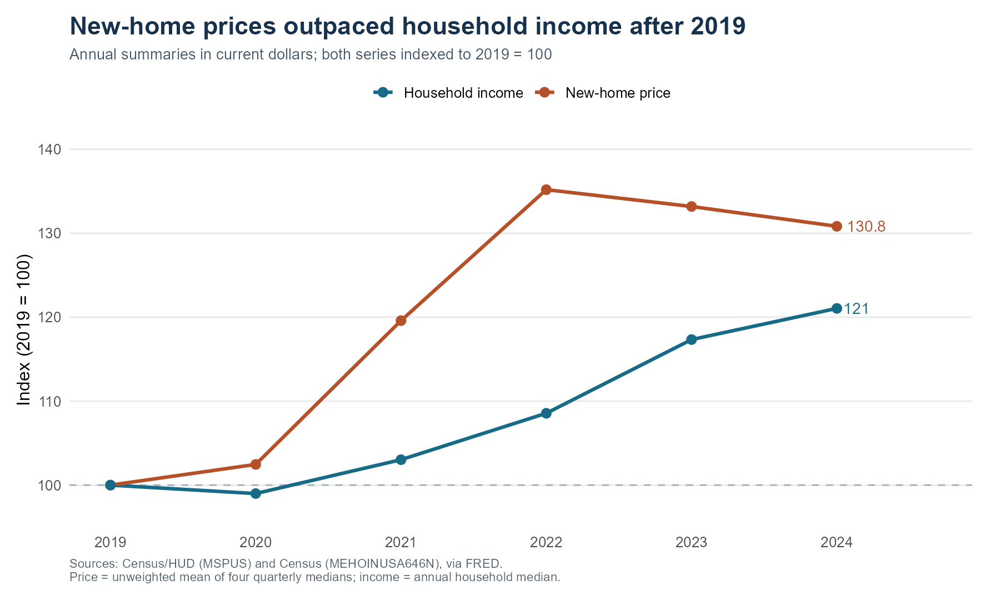
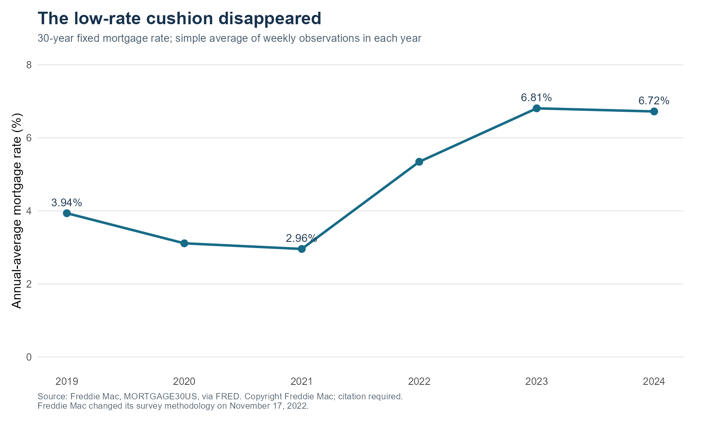
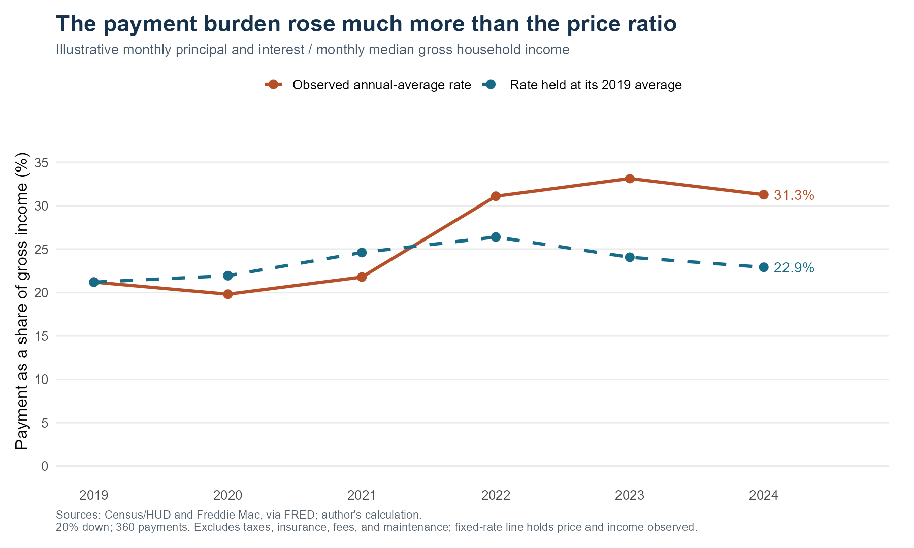

A Cheaper House Can Still Mean a Bigger Mortgage Payment
data visualization
housing
FRED
interest rates
FRED data show why the income burden of financing a new U.S. home rose after 2019, even as prices eased from their peak.
The question: price or payment?
A house-price headline tells a buyer how much to borrow, but not how hard the loan will be to repay. How did the income burden of financing a new U.S. home change between 2019 and 2024, and how much does the interest rate matter? This matters for first-time buyers: falling prices can coexist with expensive financing, while existing owners may retain an earlier, cheaper mortgage.
I combine three public FRED series: Census/HUD new-home sale prices, Freddie Mac’s 30-year mortgage rate, and Census median household income. This is a new aggregate housing dataset, separate from the CPS microdata used in my previous post. The window ends in 2024 to compare six complete calendar years consistently.
Turning three series into one comparison
I average the four quarterly price medians and the weekly mortgage rates within each year, then merge these with that year’s household income. Averaging quarterly medians produces a price proxy, not the annual median transaction price. All calculations use the included CSV snapshots; a separate R script downloads the same series directly from FRED without an API key.
The hypothetical buyer puts 20% down and takes a 30-year fixed-rate mortgage. The standard amortization formula converts the remaining 80% into a monthly principal-and-interest payment. Dividing that payment by annual gross income divided by twelve gives a comparable burden measure. Both money amounts refer to the same year: a common inflation deflator would cancel in their ratio. These are scenario calculations at annual-average inputs, not observed household payments.
Prices moved ahead of incomes
Figure 1 puts both series at 100 in 2019, making their percentage changes comparable. By 2024, prices were 30.8% higher, while income was 21% higher. The price-to-income ratio rose from 4.66 to 5.04. Buyers therefore needed a larger loan relative to income even before considering interest. The price proxy fell 3.2% between 2022 and 2024, but this alone did not restore the earlier financing burden.
The low-rate cushion disappeared

Figure 2 explains the missing piece. The annual-average mortgage rate fell from 3.94% in 2019 to 2.96% in 2021, then reached 6.81% in 2023. Lower rates initially cushioned rising prices by reducing the cost of financing each borrowed dollar. That cushion reversed. In 2024, the rate remained 6.72%, so a slightly cheaper house could still require a much larger payment than before the pandemic.
Combining the two pressures

Figure 3 translates prices and rates into the same economic unit: a share of income. The payment increased from $1,214 to $2,168 per month, a 78.6% increase. Its income share rose from 21.2% to 31.3%, an increase of 10.1 percentage points.
Holding the rate at its 2019 average gives a 2024 burden of 22.9%, or 8.4 percentage points below the observed-rate scenario. This isolates financing arithmetic while keeping price and income unchanged. It is not a causal estimate: different rates could also change prices, construction, and who buys.
Sources and limits
The downloadable inputs are MSPUS, MORTGAGE30US, and MEHOINUSA646N, retrieved October 5, 2026. Freddie Mac changed its survey methodology in November 2022. National new-home prices do not describe existing homes or local markets, and all-household median income does not represent the median buyer. Taxes, insurance, closing costs, maintenance, and savings constraints are excluded. The repository includes raw CSVs, readable R scripts, generated figures and tables, and replication instructions.
Takeaway
A cheaper purchase price does not necessarily mean an affordable payment. After 2019, higher prices relative to income and higher financing costs jointly raised this illustrative burden. Buyers should compare the loan’s payment with their own income and total ownership costs, rather than treating a decline in national house prices as proof that affordability has recovered.
View the complete R analysis and visualization code
Code
# Blog Post 4: housing prices, mortgage rates, and household income.
# Only ggplot2 is needed beyond base R. No API key is required.
# From the website root:
# post_dir <- "blog/posts/post4"
# source(file.path(post_dir, "R", "analysis.R"))
library(ggplot2)
if (!exists("post_dir")) post_dir <- "."
raw_dir <- file.path(post_dir, "data", "raw")
processed_dir <- file.path(post_dir, "data", "processed")
results_dir <- file.path(post_dir, "results")
dir.create(processed_dir, recursive = TRUE, showWarnings = FALSE)
dir.create(results_dir, recursive = TRUE, showWarnings = FALSE)
# 1. Read the three included FRED CSV snapshots.
# A period marks a missing FRED observation; treat it as NA, not zero.
prices <- read.csv(file.path(raw_dir, "MSPUS.csv"), na.strings = c(".", ""))
rates <- read.csv(file.path(raw_dir, "MORTGAGE30US.csv"), na.strings = c(".", ""))
income <- read.csv(file.path(raw_dir, "MEHOINUSA646N.csv"), na.strings = c(".", ""))
# FRED sometimes calls its first column DATE instead of observation_date.
# Use the first column for dates and the documented series ID for values.
prices$year <- as.integer(substr(prices[[1]], 1, 4))
rates$year <- as.integer(substr(rates[[1]], 1, 4))
income$year <- as.integer(substr(income[[1]], 1, 4))
prices$MSPUS <- as.numeric(prices$MSPUS)
rates$MORTGAGE30US <- as.numeric(rates$MORTGAGE30US)
income$MEHOINUSA646N <- as.numeric(income$MEHOINUSA646N)
years <- 2019:2024
prices <- prices[prices$year %in% years, ]
rates <- rates[rates$year %in% years, ]
income <- income[income$year %in% years, ]
# Require complete annual inputs rather than filling in missing observations.
# There must be four quarterly prices and 52 or 53 weekly rates each year.
for (year in years) {
p <- prices$MSPUS[prices$year == year]
r <- rates$MORTGAGE30US[rates$year == year]
y <- income$MEHOINUSA646N[income$year == year]
stopifnot(length(p) == 4, all(is.finite(p)), all(p > 0))
stopifnot(length(r) >= 52, length(r) <= 53, all(is.finite(r)), all(r > 0))
stopifnot(length(y) == 1, is.finite(y), y > 0)
}
# 2. Put each input on an annual calendar-year basis.
# The mean of four quarterly medians is a price proxy, NOT an annual median.
# Weekly interest rates receive equal weight in the annual mean.
annual_prices <- aggregate(MSPUS ~ year, data = prices, FUN = mean)
annual_rates <- aggregate(MORTGAGE30US ~ year, data = rates, FUN = mean)
annual_income <- income[, c("year", "MEHOINUSA646N")]
housing <- merge(annual_prices, annual_rates, by = "year")
housing <- merge(housing, annual_income, by = "year")
names(housing) <- c("year", "price_usd", "rate_pct", "income_usd")
housing <- housing[order(housing$year), ]
stopifnot(identical(housing$year, years))
# 3. Construct comparable indexes and a transparent mortgage calculation.
base <- housing[housing$year == 2019, ]
last <- housing[housing$year == 2024, ]
housing$price_index <- 100 * housing$price_usd / base$price_usd
housing$income_index <- 100 * housing$income_usd / base$income_usd
housing$price_to_income <- housing$price_usd / housing$income_usd
# Assumptions: 20% down, 30-year fixed mortgage, 360 monthly payments.
# P&I = L * m / (1 - (1 + m)^(-360)), where m is the monthly rate.
# This is a payment at annual-average inputs, not an average borrower payment.
housing$loan_usd <- 0.80 * housing$price_usd
monthly_rate <- housing$rate_pct / 100 / 12
housing$monthly_pi_usd <- housing$loan_usd * monthly_rate /
(1 - (1 + monthly_rate)^(-360))
housing$payment_share_pct <- 100 * 12 * housing$monthly_pi_usd / housing$income_usd
# Mechanical comparison: retain each year's price and income, fix the rate.
# This does not predict how prices would react to different interest rates.
fixed_rate <- base$rate_pct / 100 / 12
housing$monthly_pi_fixed_rate_usd <- housing$loan_usd * fixed_rate /
(1 - (1 + fixed_rate)^(-360))
housing$payment_share_fixed_rate_pct <-
100 * 12 * housing$monthly_pi_fixed_rate_usd / housing$income_usd
housing$down_payment_share_pct <- 100 * 0.20 * housing$price_usd / housing$income_usd
# Both payments and income are nominal dollars from the same calendar year.
# A common price deflator cancels in their ratio: (payment/CPI)/(income/CPI).
write.csv(housing, file.path(processed_dir, "housing_annual.csv"), row.names = FALSE)
# 4. Prepare the plotting tables without pivoting, nested lists, or joins.
index_data <- rbind(
data.frame(year = housing$year, series = "New-home price", value = housing$price_index),
data.frame(year = housing$year, series = "Household income", value = housing$income_index)
)
burden_data <- rbind(
data.frame(year = housing$year, series = "Observed annual-average rate",
value = housing$payment_share_pct),
data.frame(year = housing$year, series = "Rate held at its 2019 average",
value = housing$payment_share_fixed_rate_pct)
)
index_labels <- index_data[index_data$year == 2024, ]
index_labels$label <- paste0(round(index_labels$value, 1))
burden_labels <- burden_data[burden_data$year == 2024, ]
burden_labels$label <- paste0(round(burden_labels$value, 1), "%")
rate_labels <- housing[housing$year %in% c(2019, 2021, 2023, 2024), ]
rate_labels$label <- paste0(round(rate_labels$rate_pct, 2), "%")
theme_set(theme_minimal(base_size = 13))
common_theme <- theme(
plot.title = element_text(face = "bold", size = 18, color = "#17324D"),
plot.subtitle = element_text(size = 11, color = "#45596B"),
plot.caption = element_text(size = 9, color = "#52616D", hjust = 0),
panel.grid.minor = element_blank(),
panel.grid.major.x = element_blank(),
legend.position = "top", legend.title = element_blank(),
plot.margin = margin(12, 20, 12, 12)
)
plot_1 <- ggplot(index_data, aes(x = year, y = value, color = series)) +
geom_hline(yintercept = 100, color = "#ADB7BF", linetype = "dashed") +
geom_line(linewidth = 1.2) + geom_point(size = 2.8) +
geom_text(data = index_labels, aes(label = label), hjust = -0.25,
show.legend = FALSE, size = 4) +
scale_color_manual(values = c("New-home price" = "#B65029", "Household income" = "#176B87")) +
scale_x_continuous(breaks = years, limits = c(2019, 2024.65)) +
scale_y_continuous(breaks = seq(100, 140, 10), limits = c(97, 140)) +
labs(title = "New-home prices outpaced household income after 2019",
subtitle = "Annual summaries in current dollars; both series indexed to 2019 = 100",
x = NULL, y = "Index (2019 = 100)",
caption = "Sources: Census/HUD (MSPUS) and Census (MEHOINUSA646N), via FRED.\nPrice = unweighted mean of four quarterly medians; income = annual household median.") +
common_theme
plot_2 <- ggplot(housing, aes(x = year, y = rate_pct)) +
geom_line(linewidth = 1.2, color = "#176B87") +
geom_point(size = 3, color = "#176B87") +
geom_text(data = rate_labels, aes(label = label), vjust = -0.9,
color = "#17324D", size = 4) +
scale_x_continuous(breaks = years) +
scale_y_continuous(limits = c(0, 8), breaks = seq(0, 8, 2)) +
labs(title = "The low-rate cushion disappeared",
subtitle = "30-year fixed mortgage rate; simple average of weekly observations in each year",
x = NULL, y = "Annual-average mortgage rate (%)",
caption = "Source: Freddie Mac, MORTGAGE30US, via FRED. Copyright Freddie Mac; citation required.\nFreddie Mac changed its survey methodology on November 17, 2022.") +
common_theme
plot_3 <- ggplot(burden_data, aes(x = year, y = value, color = series, linetype = series)) +
geom_line(linewidth = 1.2) + geom_point(size = 2.8) +
geom_text(data = burden_labels, aes(label = label), hjust = -0.25,
show.legend = FALSE, size = 4) +
scale_color_manual(values = c("Observed annual-average rate" = "#B65029",
"Rate held at its 2019 average" = "#176B87")) +
scale_linetype_manual(values = c("Observed annual-average rate" = "solid",
"Rate held at its 2019 average" = "dashed")) +
scale_x_continuous(breaks = years, limits = c(2019, 2024.65)) +
scale_y_continuous(limits = c(0, 38), breaks = seq(0, 35, 5)) +
labs(title = "The payment burden rose much more than the price ratio",
subtitle = "Illustrative monthly principal and interest / monthly median gross household income",
x = NULL, y = "Payment as a share of gross income (%)",
caption = "Sources: Census/HUD and Freddie Mac, via FRED; author's calculation.\n20% down; 360 payments. Excludes taxes, insurance, fees, and maintenance; fixed-rate line holds price and income observed.") +
common_theme
# 5. Save the figures and the numeric statements used in the article.
ggsave(file.path(results_dir, "01_price_and_income.png"), plot_1,
width = 10, height = 6, dpi = 180, bg = "white")
ggsave(file.path(results_dir, "02_mortgage_rate.png"), plot_2,
width = 10, height = 6, dpi = 180, bg = "white")
ggsave(file.path(results_dir, "03_payment_burden.png"), plot_3,
width = 10, height = 6, dpi = 180, bg = "white")
# These objects supply inline R expressions in index.qmd.
base <- housing[housing$year == 2019, ]
last <- housing[housing$year == 2024, ]
low <- housing[housing$year == 2021, ]
peak <- housing[housing$year == 2023, ]
price_growth <- 100 * (last$price_usd / base$price_usd - 1)
income_growth <- 100 * (last$income_usd / base$income_usd - 1)
payment_growth <- 100 * (last$monthly_pi_usd / base$monthly_pi_usd - 1)
burden_change <- last$payment_share_pct - base$payment_share_pct
rate_gap <- last$payment_share_pct - last$payment_share_fixed_rate_pct
price_drop <- 100 * (last$price_usd / housing$price_usd[housing$year == 2022] - 1)
findings <- data.frame(
statistic = c("2019_to_2024_price_growth_pct", "2019_to_2024_income_growth_pct",
"2019_to_2024_monthly_payment_growth_pct", "payment_share_change_pp",
"2024_fixed_2019_rate_gap_pp", "2022_to_2024_price_change_pct"),
value = c(price_growth, income_growth, payment_growth, burden_change, rate_gap, price_drop)
)
write.csv(findings, file.path(results_dir, "key_findings.csv"), row.names = FALSE)
write.csv(index_data, file.path(results_dir, "figure_1_data.csv"), row.names = FALSE)
write.csv(housing[, c("year", "rate_pct")], file.path(results_dir, "figure_2_data.csv"), row.names = FALSE)
write.csv(burden_data, file.path(results_dir, "figure_3_data.csv"), row.names = FALSE)
capture.output(sessionInfo(), file = file.path(results_dir, "sessionInfo.txt"))View the optional R data-download code
Code
# Optional refresh: the complete original CSV snapshots are already included.
# Run from the website root:
# post_dir <- "blog/posts/post4"
# source(file.path(post_dir, "R", "download_data.R"))
# This script uses base R only. It does not run during normal rendering.
if (!exists("post_dir")) post_dir <- "."
raw_dir <- file.path(post_dir, "data", "raw")
dir.create(raw_dir, recursive = TRUE, showWarnings = FALSE)
options(timeout = 120)
series_ids <- c("MSPUS", "MORTGAGE30US", "MEHOINUSA646N")
urls <- paste0("https://fred.stlouisfed.org/graph/fredgraph.csv?id=", series_ids,
"&cosd=2015-01-01&coed=2024-12-31")
for (i in seq_along(series_ids)) {
# Download and check a temporary file first; keep the old CSV on failure.
temp_csv <- tempfile(fileext = ".csv")
download.file(urls[i], destfile = temp_csv, mode = "wb", method = "libcurl")
check <- read.csv(temp_csv, na.strings = c(".", ""))
stopifnot(nrow(check) > 0, series_ids[i] %in% names(check))
copied <- file.copy(temp_csv, file.path(raw_dir, paste0(series_ids[i], ".csv")),
overwrite = TRUE)
stopifnot(copied)
unlink(temp_csv)
}
manifest <- data.frame(series_id = series_ids, url = urls,
retrieved_on = as.character(Sys.Date()),
start = "2015-01-01", end = "2024-12-31")
write.csv(manifest, file.path(raw_dir, "source_manifest.csv"), row.names = FALSE)
message("CSV files refreshed. Render index.qmd to regenerate all results.")